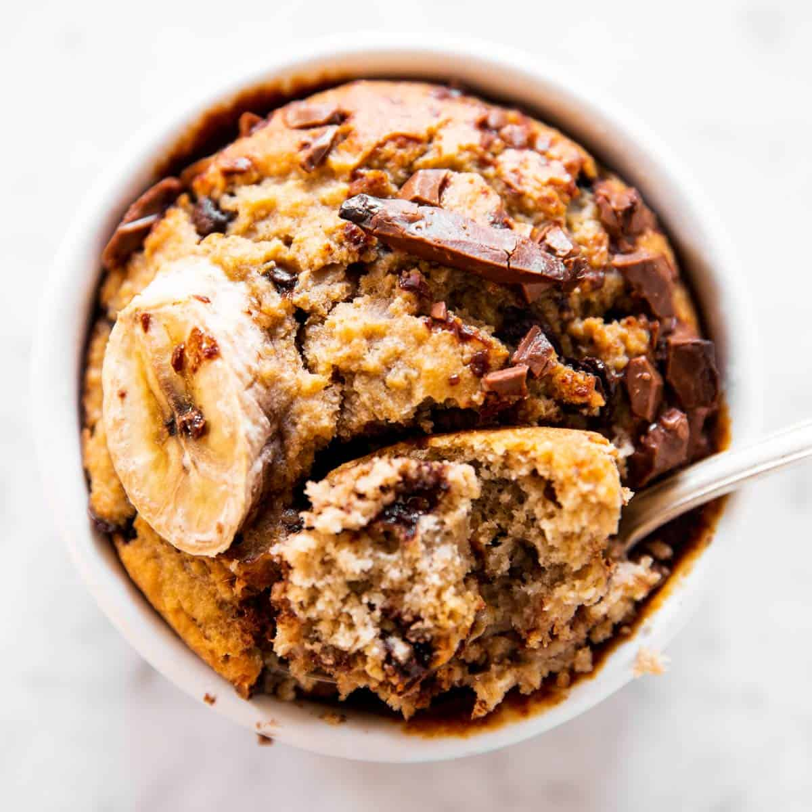

Oat Cake

This baked oat cake is delicious!
Its made with oats, honey, milk, and banana. You can add chocolate,
berries, peanut butter, etc to fit your cravings. This
recipe will be adding peanut butter and chocolate.
Ingredients
- 1 Cup of oats
- 1 cup of milk (of any kind)
- Baking Powder (1 Tsp)
- Honey (1 tbsp)
- 1 Banana
- 1 Egg
- 1 tbsp of peanut butter
- A handful of chocolate chips
Steps
- Preheat the oven to 180 degree celcius
- Put the oats, milk, baking powder, egg, banana, and honey in a processor
- Mix the ingredients
- Pour the mixture into a oven safe container
- Add peanut butter in the center
- Add chocolate chips on top and push them in if you want chocolate in the cake
- Put in the oven for 25 minutes
- Take out and let cool. Enjoy!